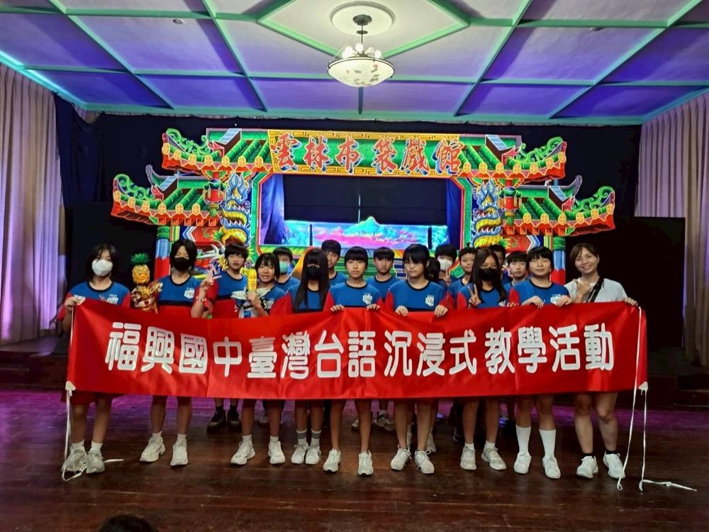
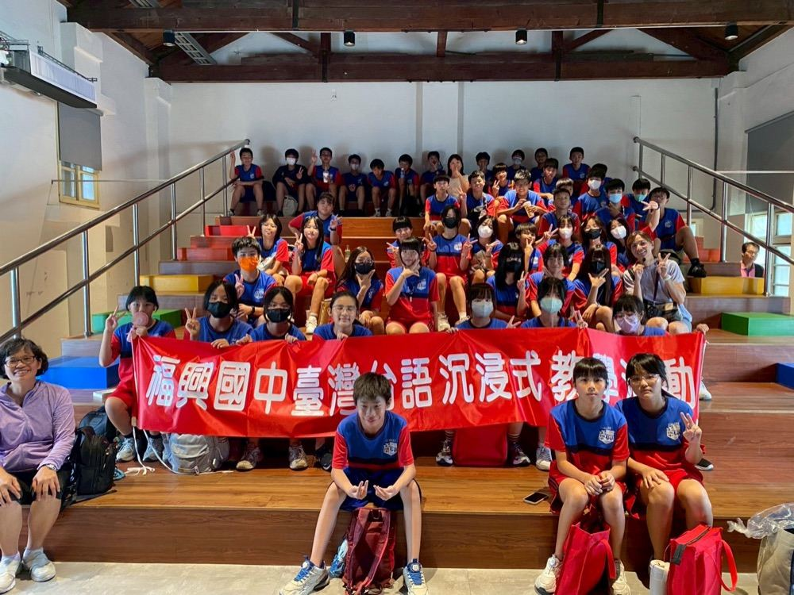
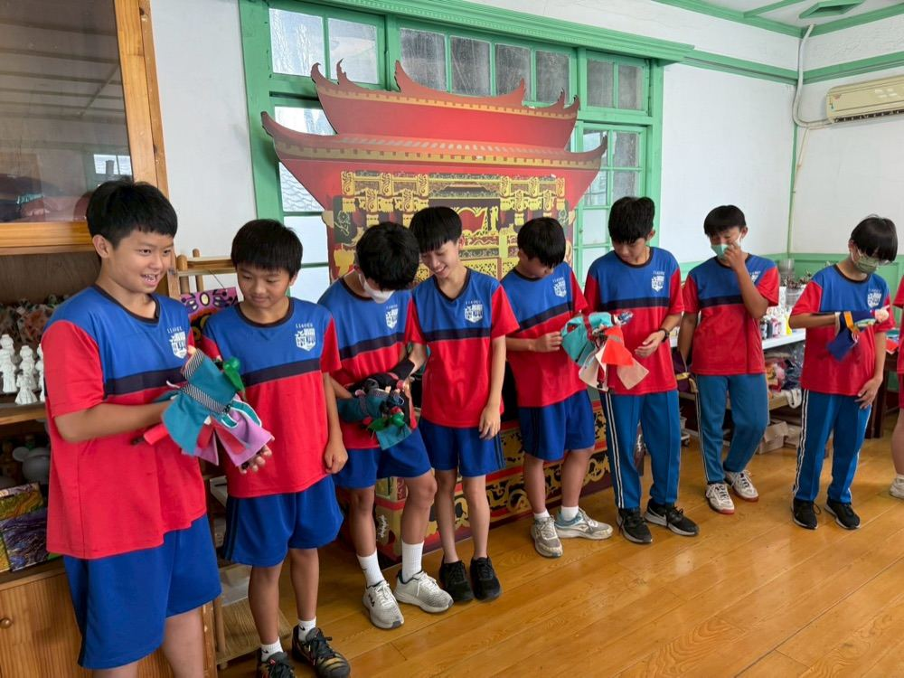
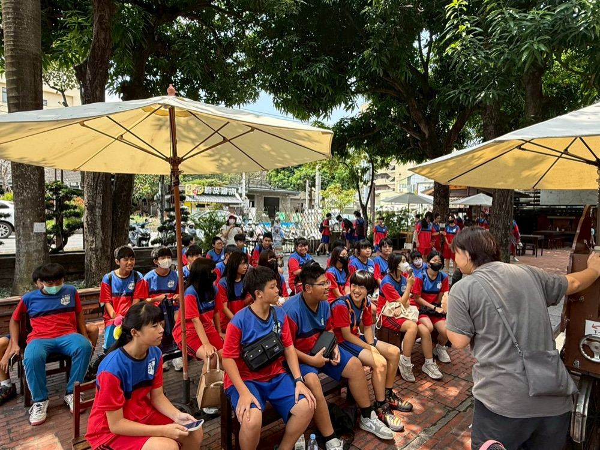
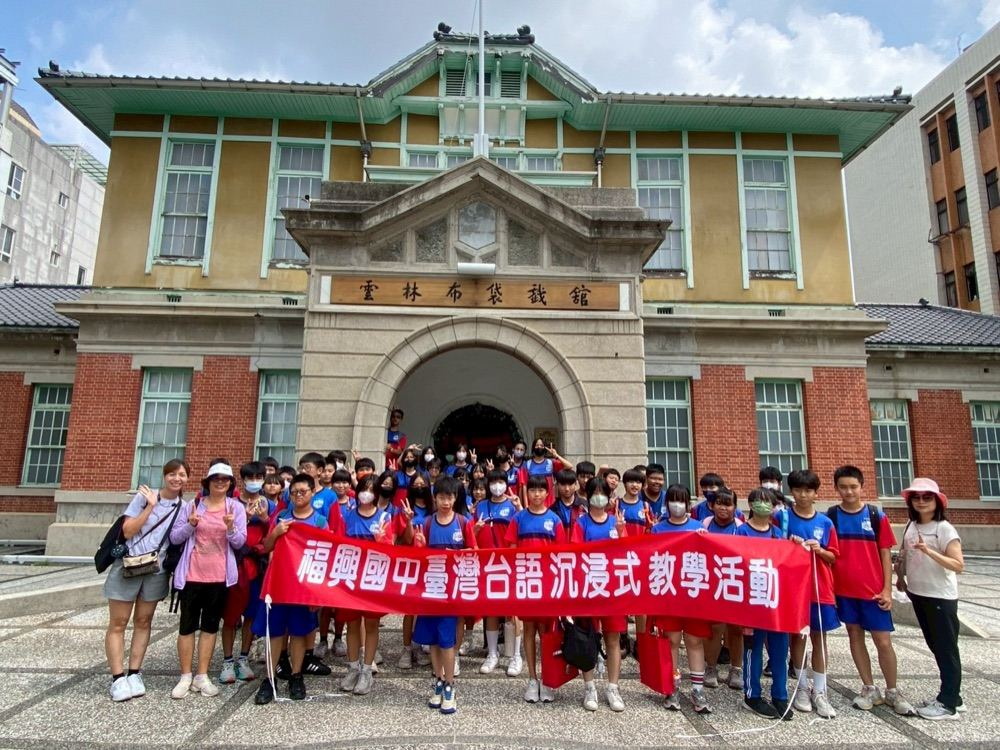
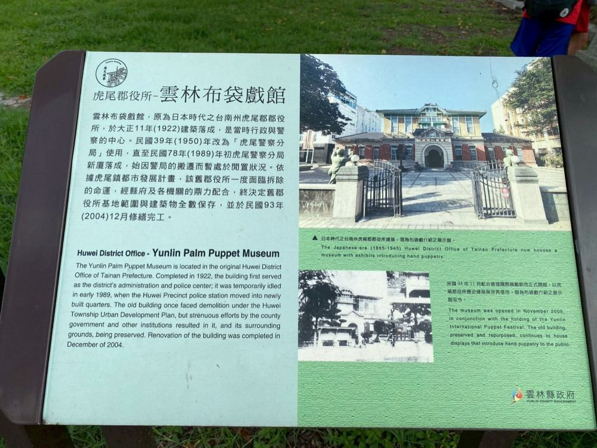

These days, catching a glimpse of budaixi (Taiwanese glove puppetry) usually means finding it on TV or waiting for a big temple festival to come around. As part of Fusing's Taiwanese-language immersion program, our seventh graders got something better: a private puppet-show experience at the Yunlin Puppet Theater Museum.

Students sat on long wooden benches with lunch boxes in hand, watching the puppets take the stage, then got hands-on with the puppets themselves — feeling the weight and movement behind every character.


Next door at the Yunlin Story House, students cooled off with popsicles under shady trees and listened to local Taiwanese-language folktales told by older student guides.

The museum itself has quite a history — it's housed in a Japanese-era district office building completed in 1922, which once faced demolition before being preserved as a heritage site and reopened as a puppet museum in 2005.


The day wrapped up with a visit to Taiwan Sugar's Huwei Sugar Factory, where a lively railway-history quiz let Fusing students show off their knowledge and good sportsmanship — earning praise from the factory's own director.
「金光閃閃、瑞氣千條～」以往想看布袋戲，大概只能從電視或大型廟會中偶遇。這次福興國中七年級的孩子們前進雲林布袋戲館，進行台語沉浸式教學的包場體驗。
同學坐在長板凳上吃便當，看著台上的布袋戲偶演出，接著親手體驗操作布袋戲偶，感受角色背後的重量與動作。
接著到雲林故事館，在樹蔭下吹著涼風、吃冰棒，聽學長姐用台語說在地故事繪本。
布袋戲館本身也很有來頭——它座落在一棟 1922 年落成的日治時期郡役所建築裡，這棟建築曾一度面臨拆除命運，後來被保存下來，於 2005 年重新開放為布袋戲館。
最後一行人來到台糖虎尾糖廠參訪，豐富有趣的台灣鐵路知識搶答，福興國中孩子展現大方氣度與廣博學識，讓虎尾糖廠所長讚不絕口。